Project report for the local simulation of analysis, containers, Azurite storage, and a GitHub Actions pipeline. Materials are the scripts, logs, and screenshots already in the CloudProject1 repository. No Azure subscription was used.
data_analysis.py loads All_Diets.csv, fills missing protein, carbs, and fat with each column’s mean, and reports averages by Diet_type, the highest-protein diet and recipe, the top five protein recipes per diet, the most common cuisine, and the protein-to-carbs and carbs-to-fat ratios. Charts are a grouped bar chart, a heatmap, and a scatter plot of the top protein recipes.
Keto has the highest average protein (101.27 g) and the lowest average carbs (57.97 g). Vegan is the opposite pattern: 56.16 g protein and 254.00 g carbs. Thirty-eight recipes have 0 g fat, so those carbs-to-fat ratios are left blank.
| Diet type | Protein (g) | Carbs (g) | Fat (g) |
|---|---|---|---|
| keto | 101.27 | 57.97 | 153.12 |
| mediterranean | 101.11 | 152.91 | 101.42 |
| paleo | 88.67 | 129.55 | 135.67 |
| dash | 69.28 | 160.54 | 101.15 |
| vegan | 56.16 | 254.00 | 103.30 |
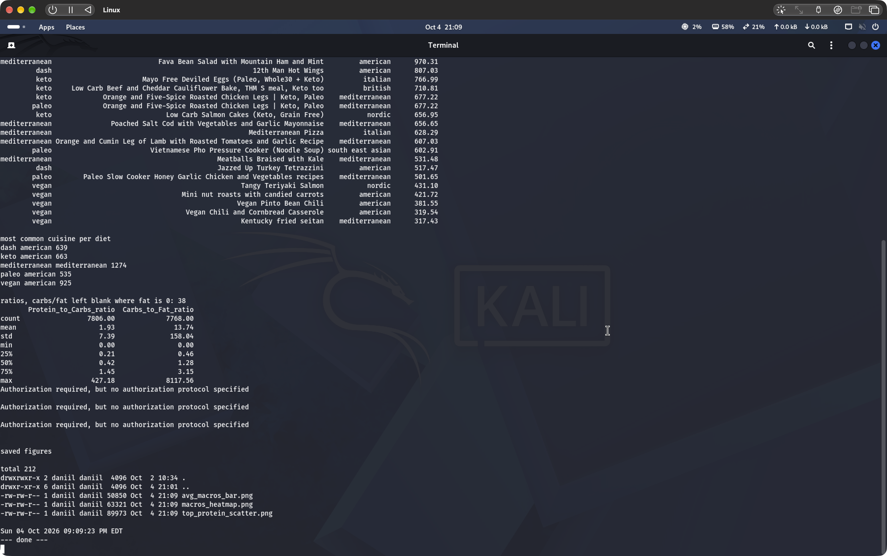
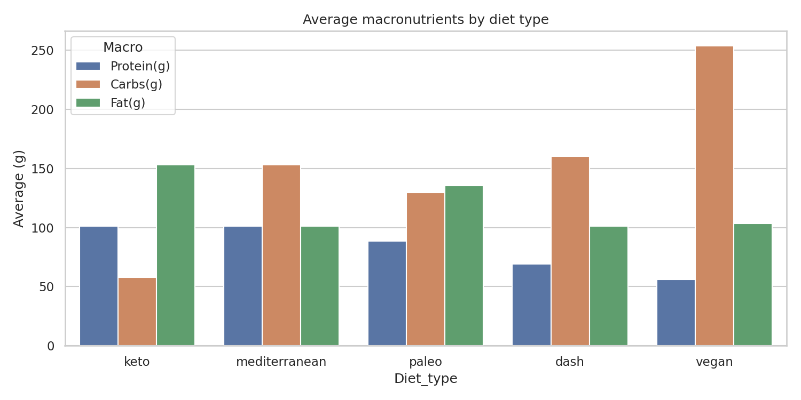
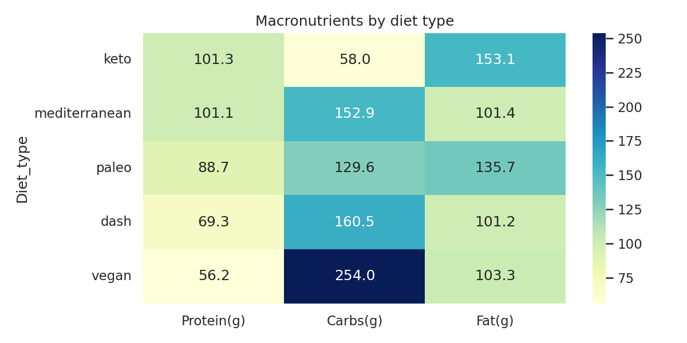
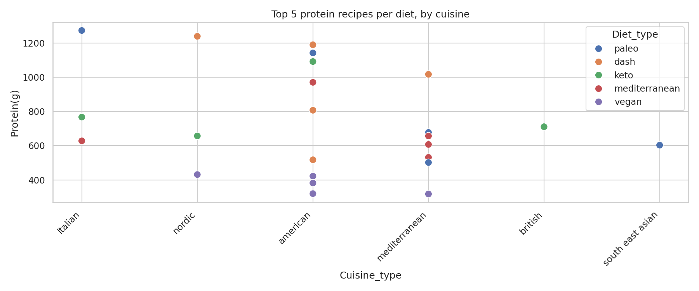
The application is packaged with a Dockerfile based on python:3.9-slim. The image was built as diet-analysis, run locally, pushed to a registry on localhost:5001, and started again with Docker Compose. The Compose service name in the log is diet-analysis-1, and the container exited 0 after printing the same analysis.
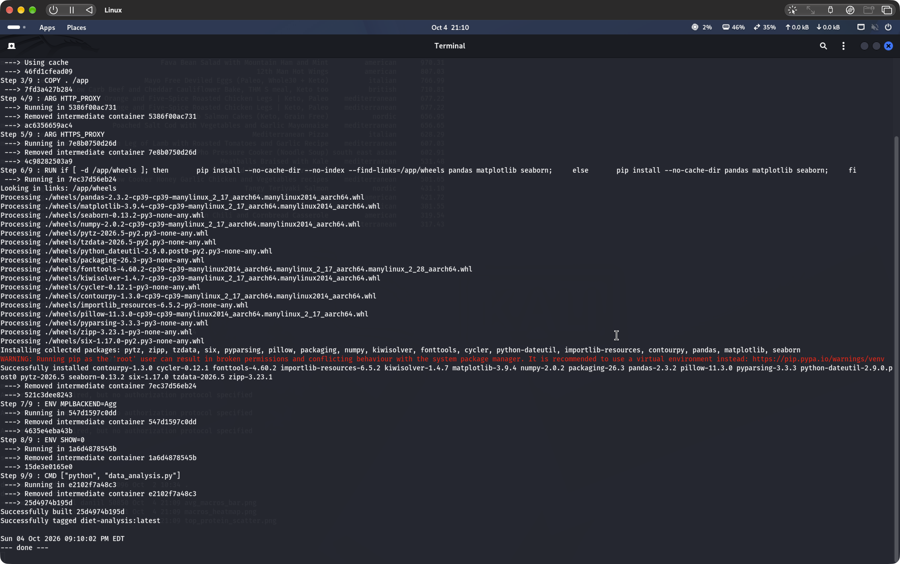
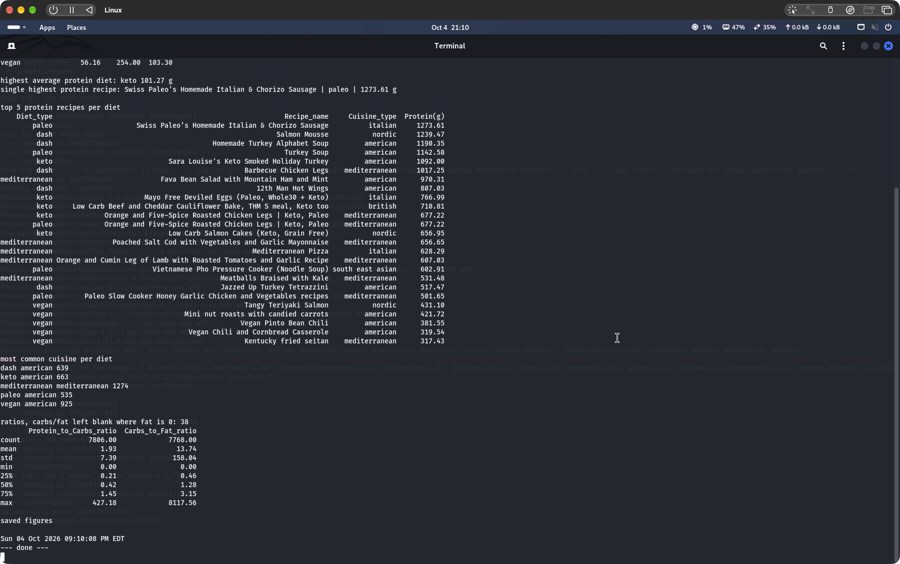
docker run of the analysis container, showing the same diet averages as Task 1.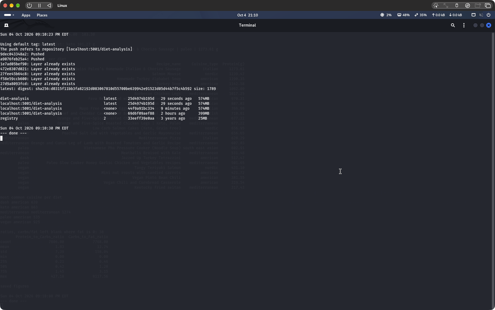
localhost:5001/diet-analysis. Date and time visible: Sun Oct 04 2026 09:10:23 PM EDT through 09:10:30 PM EDT. The log records digest sha256:d0319f11bb3fa….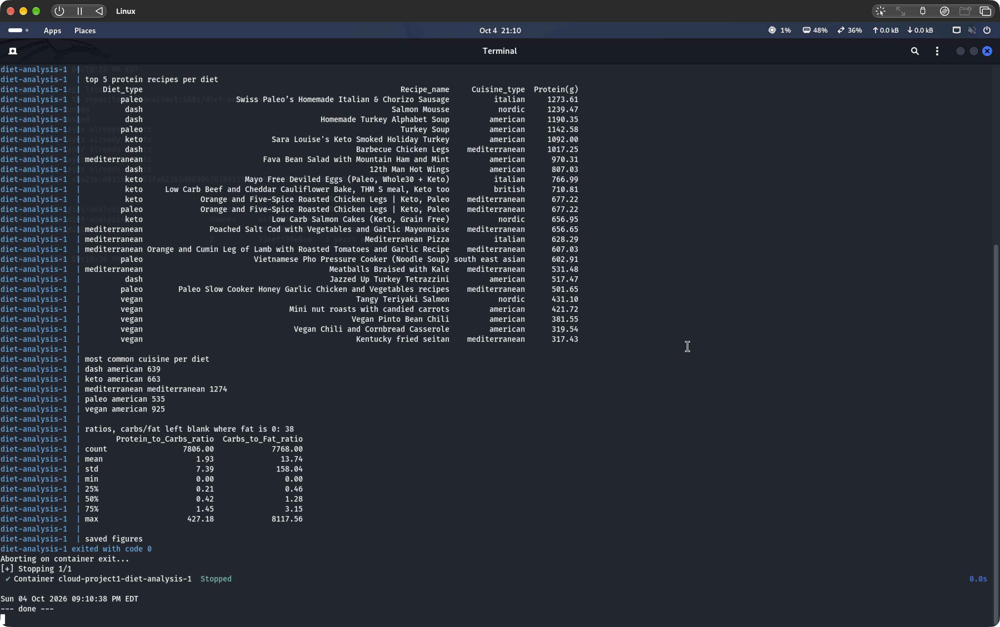
Azurite stands in for Azure Blob Storage on 127.0.0.1:10000 with the published development account. upload_to_azurite.py creates the datasets container and uploads All_Diets.csv. lambda_function.py downloads that blob, averages protein, carbs, and fat by diet, and writes simulated_nosql/results.json. Azurite does not emit blob triggers, so the function is started explicitly. That JSON file is the simulated NoSQL store.
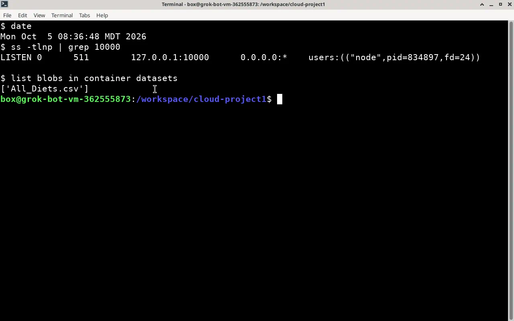
datasets container. Date and time are on the desktop clock and in the terminal date line.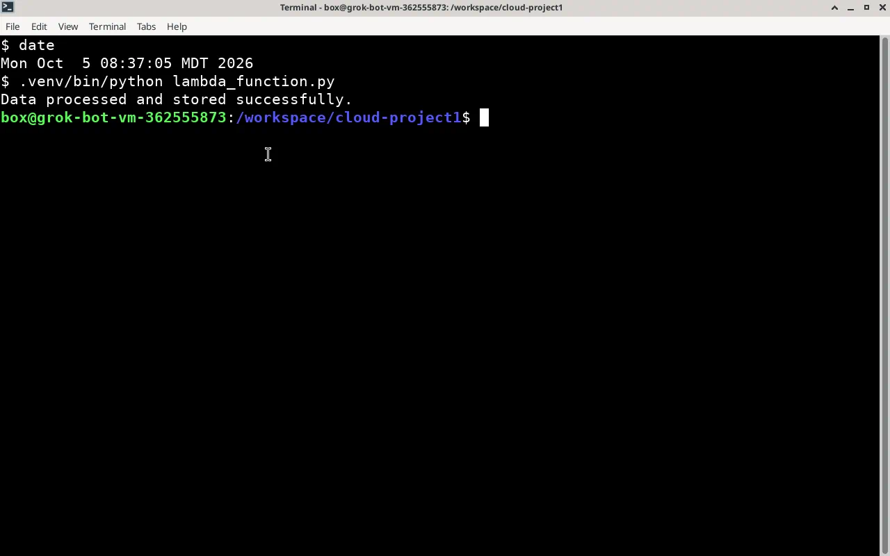
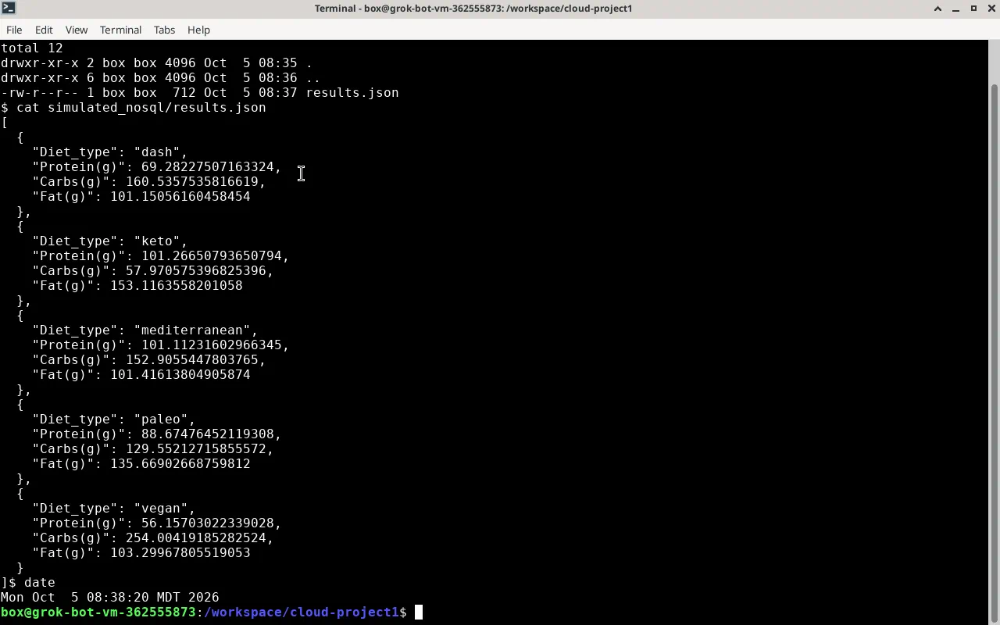
simulated_nosql/results.json after the run. Date and time visible: Mon Oct 5 08:38:20 MDT 2026. The file timestamp in the listing is Oct 5 08:36..github/workflows/deploy.yml runs on every push. It installs requirements.txt, runs pytest, builds the image, starts a registry on port 5001, pushes localhost:5001/diet-analysis:latest, runs that image, then starts Azurite and invokes lambda_function.py. Nothing is published to Docker Hub or Azure.
Run 37516803629 finished successfully. The job started 2026-10-06T19:09:21Z and completed 2026-10-06T19:11:09Z. Pytest reported 5 passed in 2.49 s. The container printed 7,806 rows and “Deployment finished Tue Oct 6 19:10:31 UTC 2026.” The function again stored the five diet documents. A second run, 37519194382, also succeeded. The timestamped log is task4_run_log.txt. The container stdout is task4_deploy_output.txt.
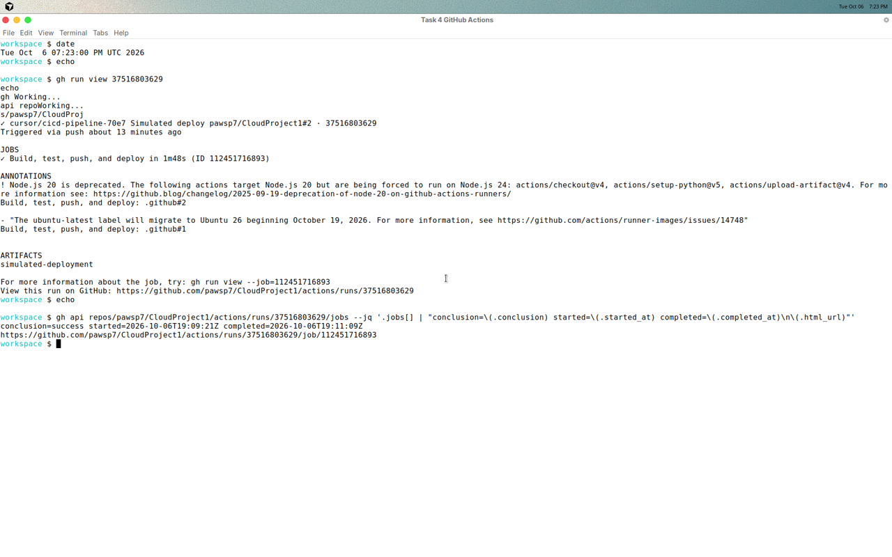
gh run view for the successful workflow. Date and time visible: Tue Oct 6 07:23:00 PM UTC 2026 on the terminal, panel clock Tue Oct 06 7:23 PM, and job times 2026-10-06T19:09:21Z to 2026-10-06T19:11:09Z.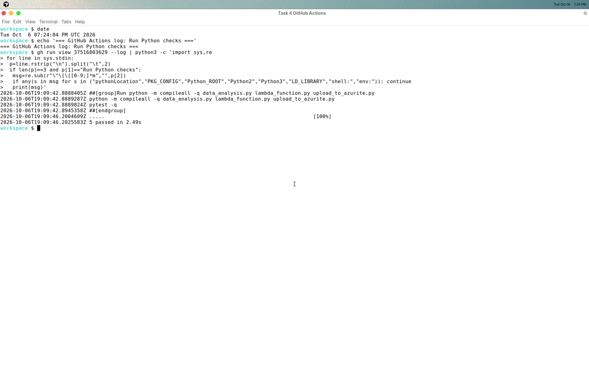
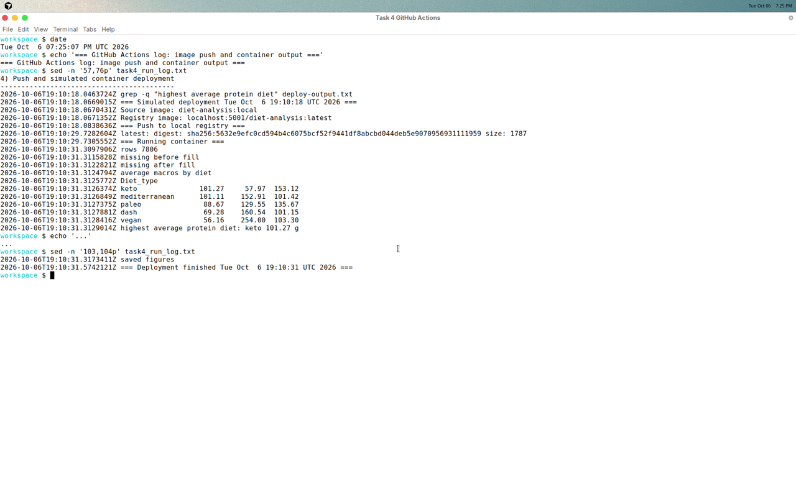
sha256:5632e9efc0cd…, keto 101.27 g protein, and “Deployment finished Tue Oct 6 19:10:31 UTC 2026.” Panel clock 7:25 PM.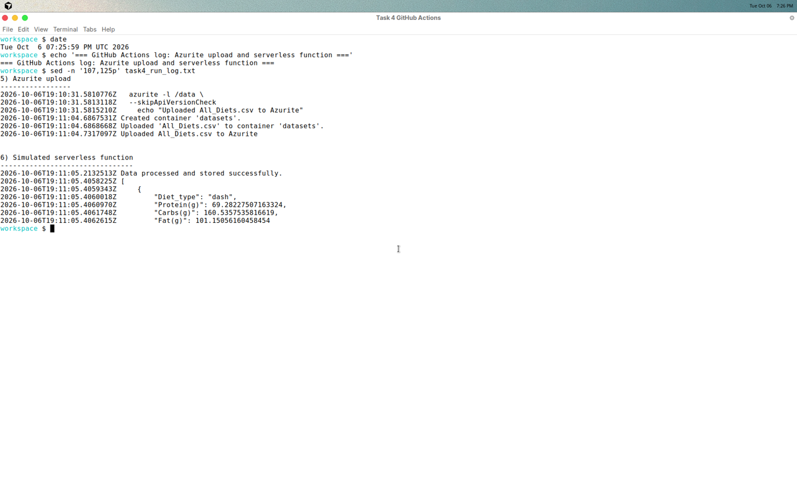
Which two options. The improvements were applied to work already in the repository. Option 1 is a multi-stage Docker build for the Task 2 image that the Task 4 workflow builds. Option 3 is a narrower read in the Task 3 function, so the aggregation parses only the columns it uses.
Research. Docker’s multi-stage build guide separates a builder stage from a runtime stage. The published image then contains the files the process needs, and a later edit to the script does not have to reinstall dependencies that were copied from the builder. Pandas read_csv accepts usecols. Columns that are not listed are not parsed. All_Diets.csv has eight columns and 7,806 rows. lambda_function.py only averages Diet_type, Protein(g), Carbs(g), and Fat(g). Recipe_name and Cuisine_type are text and hold most of the frame’s memory. The analysis script still reads every column, because the charts and cuisine counts need them.
What was applied. Dockerfile now installs pandas, matplotlib, and seaborn in a builder stage, including the existing local-wheels fallback. The runtime stage copies that install prefix plus data_analysis.py and All_Diets.csv only. lambda_function.py passes usecols when it reads the Azurite blob. tests/test_serverless.py checks that those four columns produce the same diet means as a full read, rounded to six decimal places.
Impact. Eight timed passes on this machine, after a warmup read, took 0.0088 s for a full read and average and 0.0058 s for the narrow read, about 34 percent less time. The in-memory frame fell from 2.62 MB to 0.62 MB. The means matched. The runtime image no longer includes screenshots, the assignment brief, or the tests. Installing the scientific packages stays in the builder stage, so a one-line change to the analysis script does not repeat that install. The file is small, so the time saved on one run is a fraction of a second. The same cut is what reduces memory and CPU when an extract is wider, which is the usual cost on a cloud job.